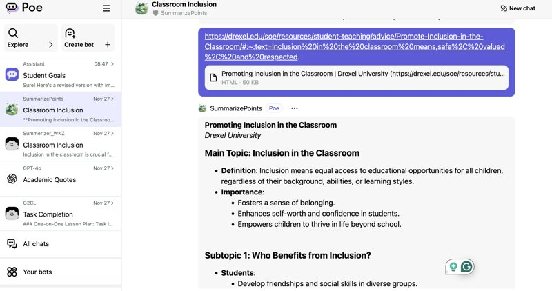
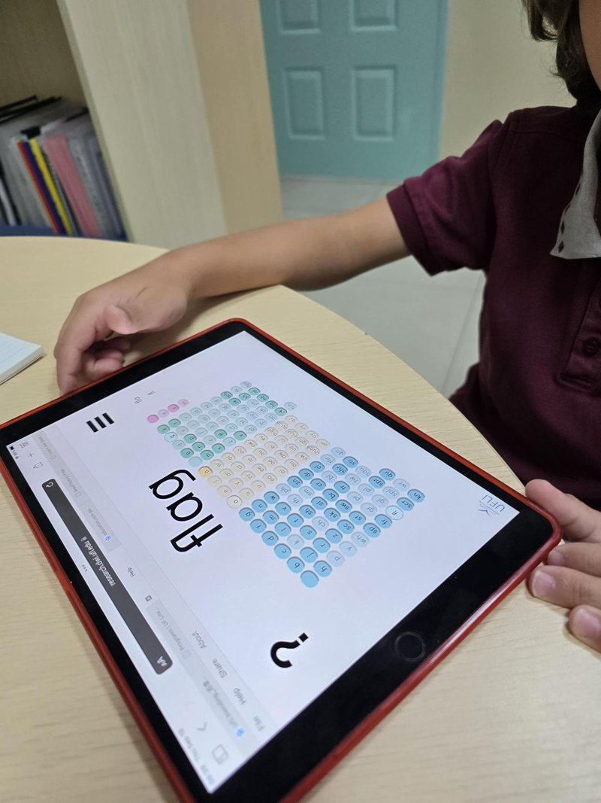
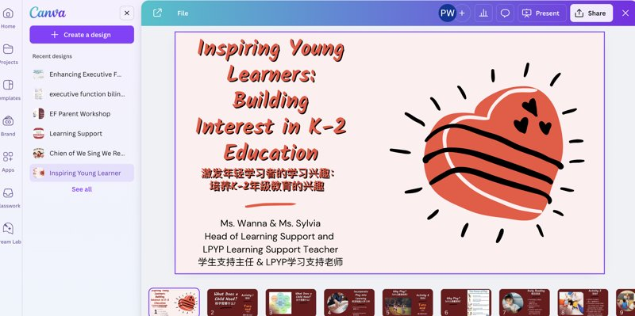
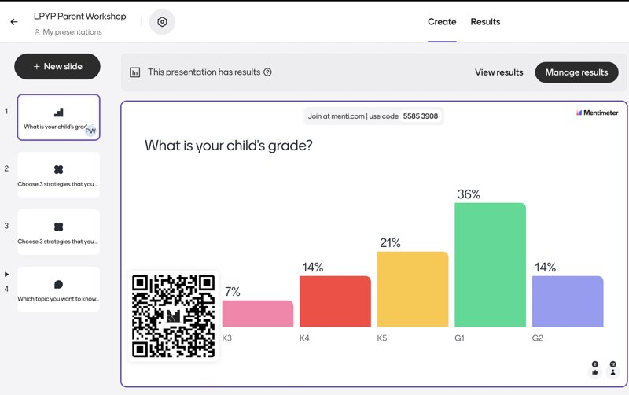
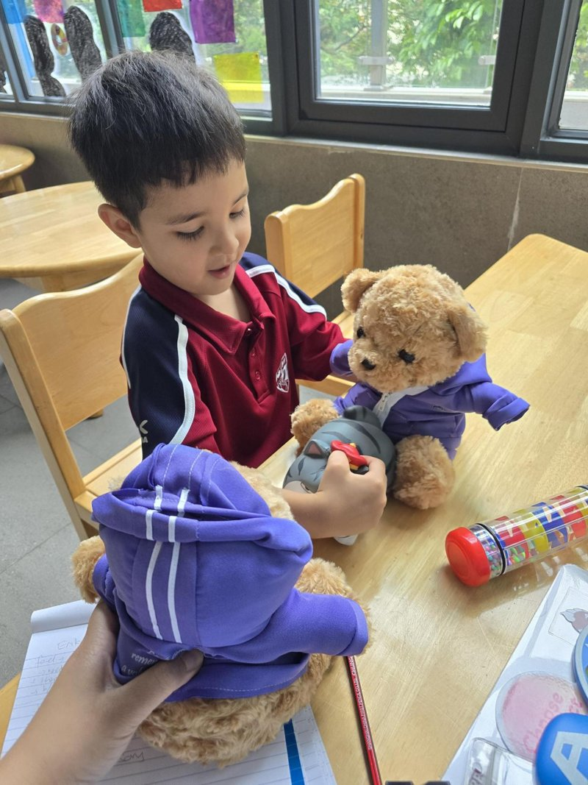
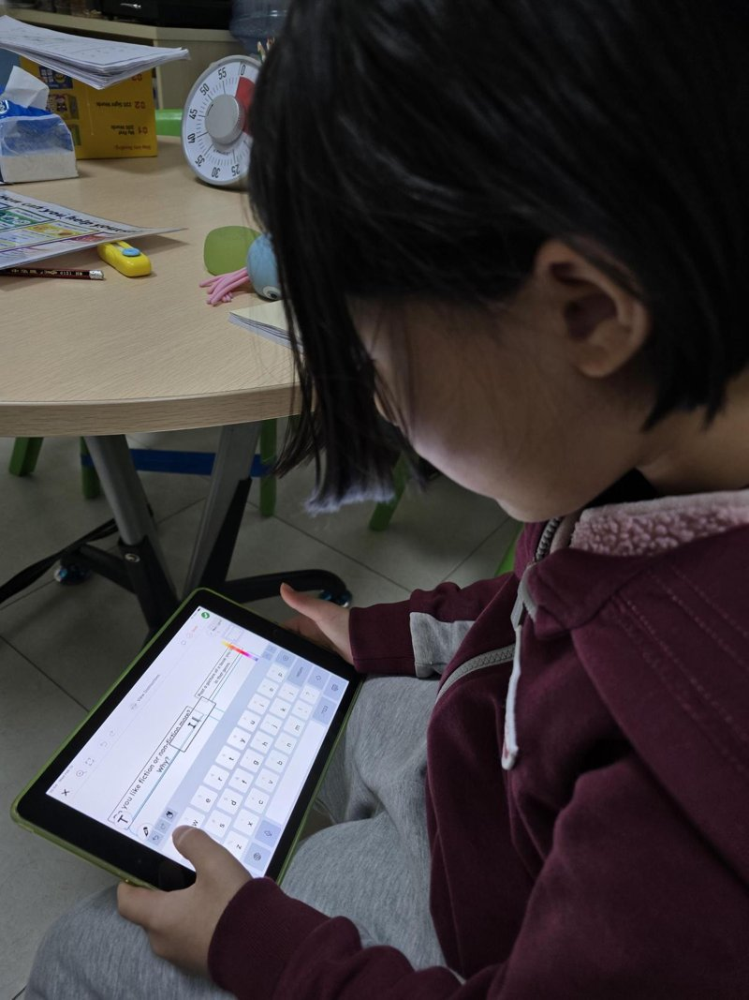
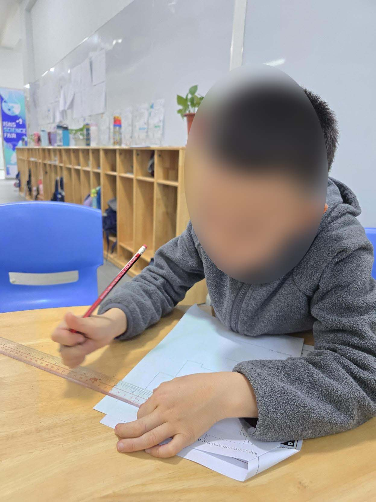

Use technology to create, adapt and personalize learning experiences that foster independent learning and accommodate learner differences and needs.
Proficient — effectively personalizes learning experiences for diverse learners.
Daily application — allow students to use text-to-speech when needed, and allow students to use the UFLI mat board during the encoding activity.
Use assessment data to guide progress and communicate with students, parents, and education stakeholders to build student self-direction.
Proficient — consistently analyzes and uses data to adjust instruction and support students.
Daily application — consistently use literacy data (e.g., IXL, core phonics), behavioral data, and social-emotional data (SSF) to help create and adjust the instruction and interventions provided to students.
Educators set professional learning goals to apply teaching practices made possible by technology, explore promising innovations, and reflect on their effectiveness.
Proficient — set clear, actionable professional learning goals that leverage technology effectively.
Application — facilitate learning with technology to support students' needs (e.g., UFLI, RAZ Kids, POE, DeepSeek, Canva).

AI Tools to Gather Academic Resources

UFLI Word Mat in Literacy Intervention

Canva for Slides & Shared Resources

Mentimeter in Parent Workshop
Model and nurture creativity and creative expression to communicate ideas, knowledge, or connections.
Learner — model some creative practices.

Role Play — Share, Trade, and Take Turns
Foster a culture where students take ownership of their learning goals and outcomes in both independent and group settings.
Learner — encourages some degree of student ownership.

Student Initiating and Completing a Classroom Task

Task Initiation and Work Completion